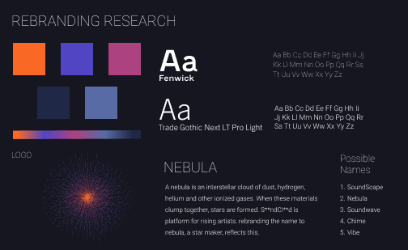

soundcloud → nebula
The assignment was to redesign an app’s brand identity and create meaningful microinteractions that match the brand.
the problem:
While using Soundcloud's app, I noticed how there was a disconnect between the brand and the micro interactions on the app. The app’s design was also missing a touch of identity to it. There wasn’t really a connection between users, which is what soundcloud’s intention is.
challenges
#1 — crafting a brand
First and foremost, my main challenge was coming up with a new identity for SoundCloud that reflected its vision and mission.
solution:
After understanding the user's pain points and what soundcloud's identity is, I came up with a brand identity like Nebula that would be easy for the user to understand and relate to.
#2 — interactions
The second challenge here was creating meaningful interactions that match the rebranding and complete the experience of the app.
solution:
I decided to make the interaction between the user and the app while the music plays have more movement to it.
rebranding
One of the main problems I identified in Soundcloud was the lack of connection between the purpose of the app and its branding. While it is not necessary to have the app's title dictate the imagery, it can help make the brand more recognizable to the user. With the new branding, there is more of a focus on associating the brand name to the design of the app. By doing this, my goal was to foster a deeper connection between the brand and the user.
research
I based the colors and logo on the concept of a nebula. After taking a look at the task flow of the current app's design, I decided to make some changes to the structure of the menu. This would make items more accessible, and help the interactions between pages flow more smoothly.
information architecture changes
The home page and trending page have been consolidated into one page. The original design was confusing to use when two similar categories were on the same page. In the old menu, the music library/playlists were only accessible from the proofile page. Separating the music library from the Profile page makes the app feel more like a music streaming service.
task flow
After determining the design & brand of the app, I focused on creating microinteractions that reflected the new identity I had created. To start, I took a look at the current task flow for reposting a song on soundcloud:
The interactions in the app are lackluster and the navigation between some of the pages are ineffecient. For an app that is meant to be focused on user-created sounds, there were limited options for interaction between user profiles. When a user reposts a song to their profile, there is limited confirmation that this action is completed.
wireframes
STRUCTURE // LOGIN > SIGN IN > HOME > TRENDING > SONG PAGE > REPOST PAGE > PROFILE

Now, the user has the option to write a post before reposting the content on their profile. There is also visual confirmation that the action has been completed.